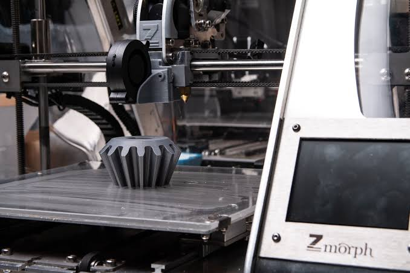

Manufatura aditiva: a impressão 3D na indústria mecânica

Peça mecânica produzida por impressão 3D
A manufatura aditiva, conhecida como impressão 3D, constrói peças camada por camada a partir de um modelo digital. Ela está mudando a forma como a engenharia mecânica projeta e fabrica componentes
O que é?
Em termos simples, é o processo de fabricar um objeto físico adicionando material camada por camada, a partir de um modelo digital feito no computador (como um arquivo CAD).
Diferente da usinagem, que remove material de um bloco, a impressão 3D adiciona material apenas onde é necessário. Isso reduz o desperdício e permite criar formas complexas
Principais Tecnologias
- FDM / FFF (Modelagem por Fusão de Filamento)
- SLS (Sinterização Seletiva a Laser)
- SLA / DLP (Estereolitografia)
- SLM / DMLS (Fusão Seletiva a Laser / Deposição de Metal)
Principais tecnologias de impressão 3D
| Sigla | Nome | Material | Aplicação |
|---|---|---|---|
| FDM / FFF | Modelagem por Fusão de Filamento | Plásticos (PLA, ABS) | Protótipos e peças funcionais |
| SLS | Sinterização Seletiva a Laser | Pó de nylon | Peças resistentes sem necessidade de suporte |
| SLA / DLP | Estereolitografia | Resina fotossensível | Peças de alta precisão e acabamento liso |
| SLM / DMLS | Fusão Seletiva a Laser / Sinterização Direta de Metal a Laser | Pó metálico (aço, alumínio, titânio) | Peças finais para aeroespacial e implantes |